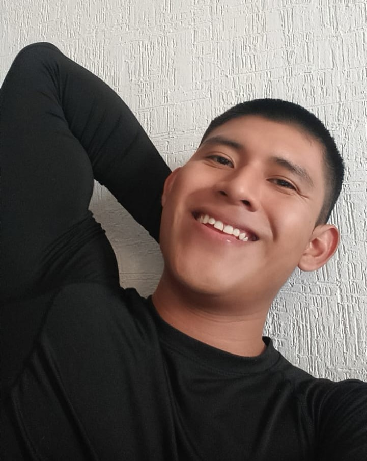

JUAN MIGUEL JUAN IGNACIO
Estudiante en la Universidad Politecnica de Quintana Roo
Trabajo constantemente en fortalecer mis habilidades con HTML, CSS y JavaScript, desarrollando proyectos que combinan diseño y rendimiento.
Estoy enfocado en seguir aprendiendo sobre UI/UX, frontend y buenas prácticas para construir productos digitales de buen nivel.
Me motiva crecer como desarrollador, enfrentar nuevos retos y mejorar en cada proyecto.
19
Años
+ 3
Proyectos
100%
Dedicado
Mis Proyectos
Trabajos destacados